V0.17 JUROR GUIDE | TWO INDUSTRIAL REVOLUTIONS, ONE ROLE SHIFT
No self-awarded score; seven claims, evidence paths and unmet conditions are visible above the fold.
20BRIEF ALIGNMENT10ORIGINALITY15AI PLANNING20FEASIBILITY10PUBLIC INTEREST10RISK + COMPLIANCE15EXPRESSION
TRUTHFUL STATE | acceptance 12 = 8 proposal-judgeable + 4 field-dependent; six conditional releases, external release 0; verified cost inputs 0; authorized site actions 0.
Jing-Zhang Overall Framework: Three Zones, Two Wings, Three Key Areas, Five Flagships
Locate the Jing-Zhang spatial system before entering FP01. SITE / KEY geometry is provisional and triggers whole-package recalculation when official boundaries arrive.
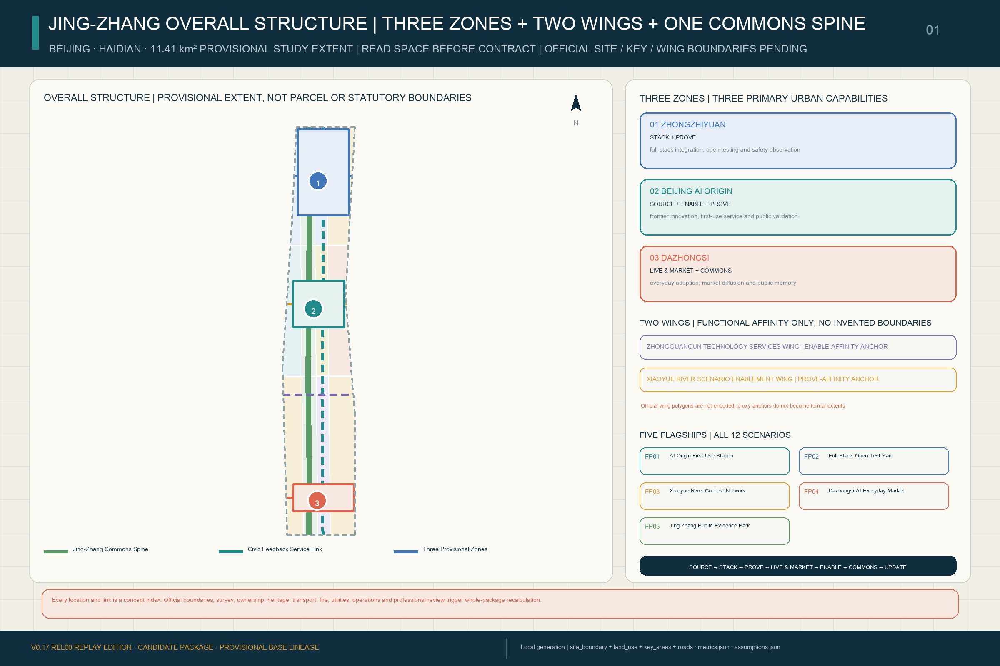
Two-Level Test: Co-Creation Underway, Urban Practice Awaiting Evidence
One co-creation process is underway with public records; one urban practice still awaits external evidence. The two evidence levels inform one another but cannot substitute for one another.
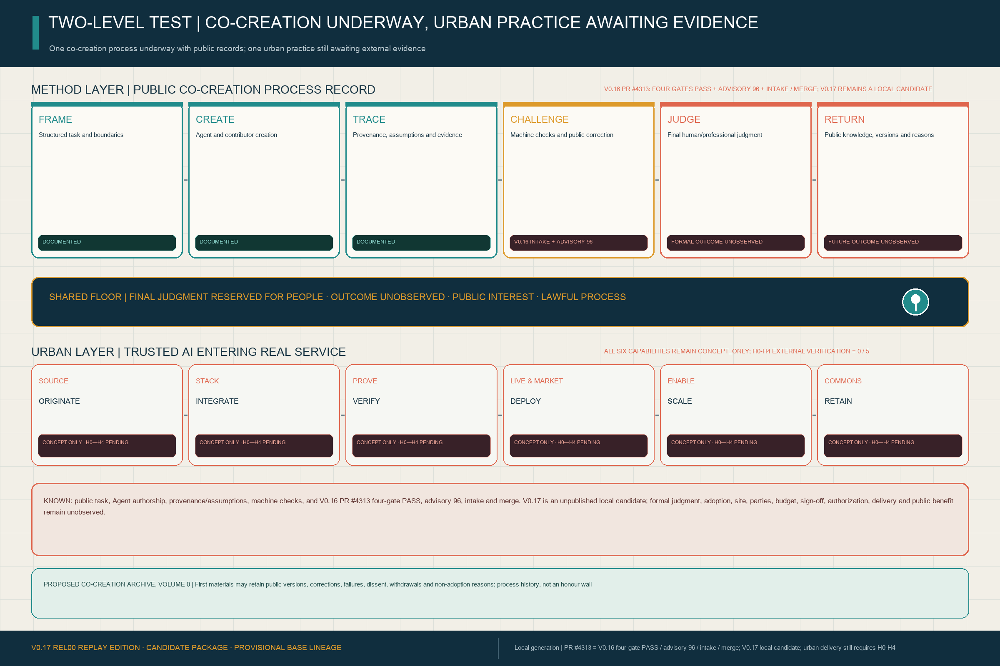
A Co-Creation Archive, Volume 0 is proposed. Its first materials may retain public tasks, versions, provenance, corrections, dissent, failures, withdrawals and non-adoption reasons; it is process history, not an already established honour wall.
Three Key Areas Supporting the Contract at Human Scale
All images are conceptual experiences—not current conditions, precise siting, architectural proposals or approved works.

ZHONGZHIYUAN · INTEGRATE / PROVE
A public observation walk stays outside the safety boundary; staffed control, physical emergency stop and visible energy remain inside.

AI ORIGIN · ORIGINATE / DEPLOY
A wheelchair/no-smartphone user reaches a staffed counter first; evaluation, stop control and appeal remain institutionally separate.

DAZHONGSI · DEPLOY / SCALE
Small merchants and creators stay frontstage while staffed service, dispute review and a contribution archive form an everyday interface.
Six System Capabilities Move Downstream as Spatial and Operating Support
ORIGINATE—INTEGRATE—PROVE—DEPLOY—SCALE—RETAIN is not the first-screen claim. It is back-end capacity helping one task complete, be taken over, exit and leave evidence.
One Person, One Task, One Revocable Contract
FP01 states one candidate service problem for D0 field confirmation. It is not an authorized service, procurement or pilot.
P01 · an early-career user. Wheelchair use and no smartphone are design-test conditions, not a real resident profile.
At a staffed window, find one human-confirmed learning or career service—or receive a reasoned, appealable refusal—while preserving no-smartphone and non-AI paths. The D0 human/non-digital baseline remains unknown.
S07 is the only user-facing service; S03 performs independent evaluation only; S04 provides interface/API support only.
FOUR SYNTHETIC RECEIPTSSUCCESSREFUSALHUMAN TAKEOVEREXIT + RESTORATION
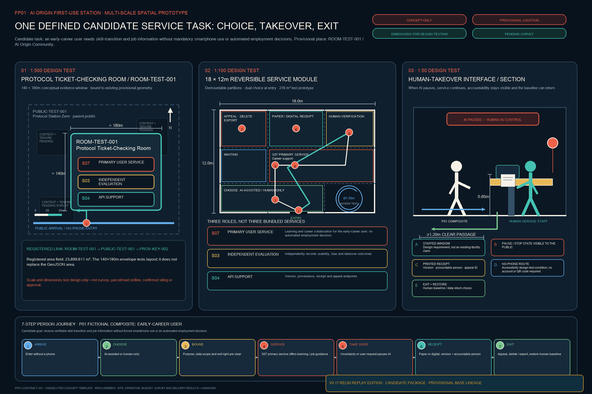
FP01 · A Revocable First-Use Contract for One Candidate Task
S07 is the sole user-facing service, S03 evaluates only, and S04 supports the interface only; the D0 baseline is unknown. Four synthetic receipts cover success, refusal, human takeover and exit/restoration. Passing D90 still opens only a separate authorization discussion.
GO · UNLOCKS SEPARATE AUTHORIZATION DISCUSSION ONLY
REVISE / STOP · FREEZE AUTOMATION, RESTORE HUMAN BASELINE, RETAIN FAILURE EVIDENCE IN COMMONS
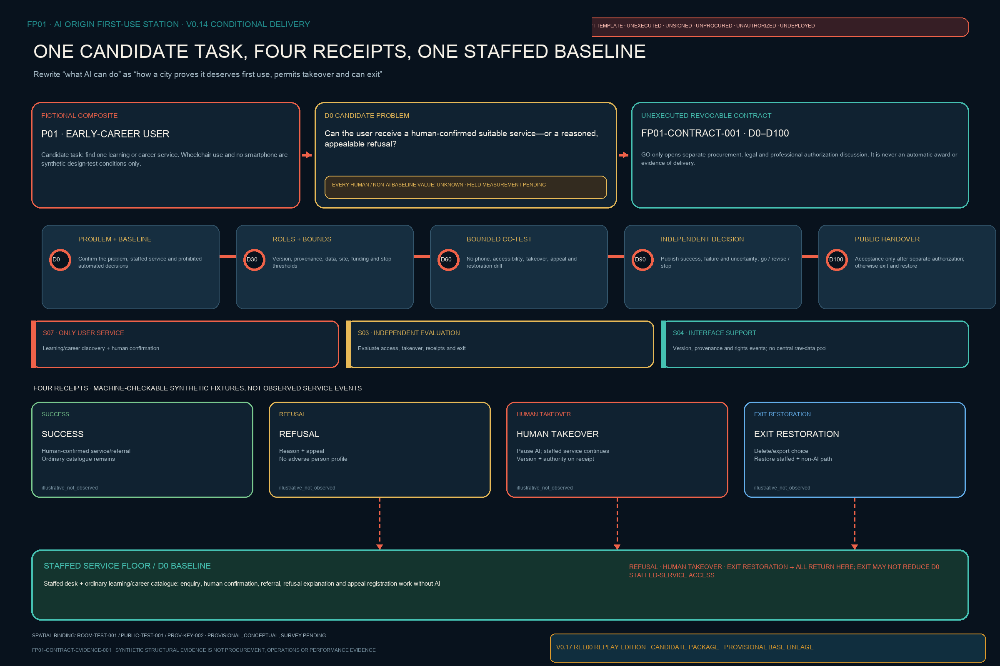
V0.17 PRE-FEASIBILITY HANDOFF | JSON-SOURCED INDICATORS
Every indicator is read from fp01-delivery-control.json; external actuals remain 0 / null / HOLD
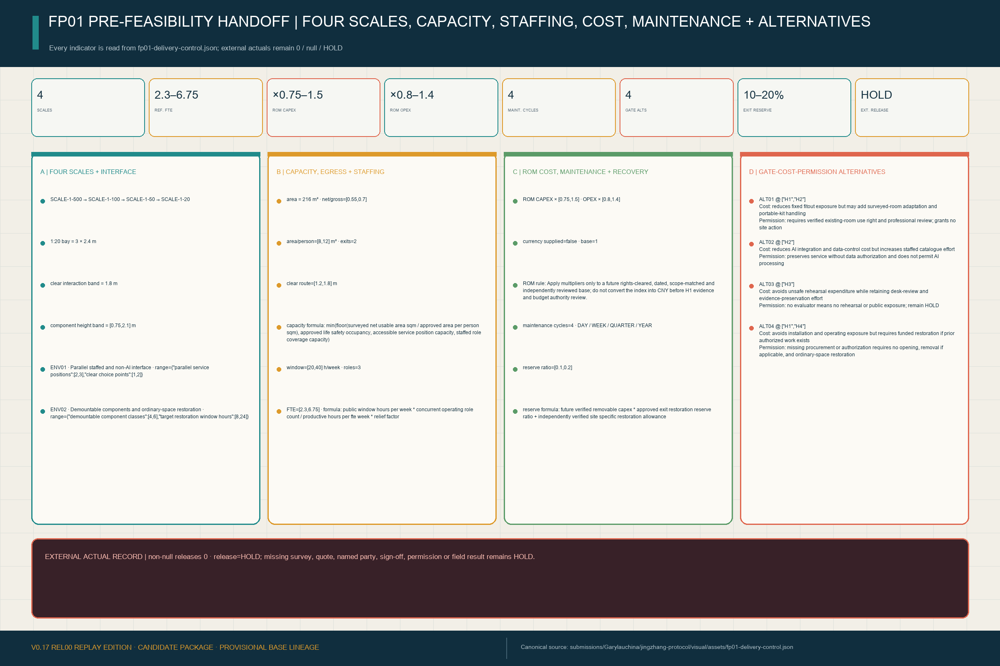
EXTERNAL ACTUAL RECORD | non-null releases 0 · release=HOLD; missing survey, quote, named party, sign-off, permission or field result remains HOLD.
FP01 Feasibility Verdict and REL00 Replay
The four official feasibility foci are judgeable on one page. Twelve synthetic interface cases were actually run, with no field or external-evidence credit.
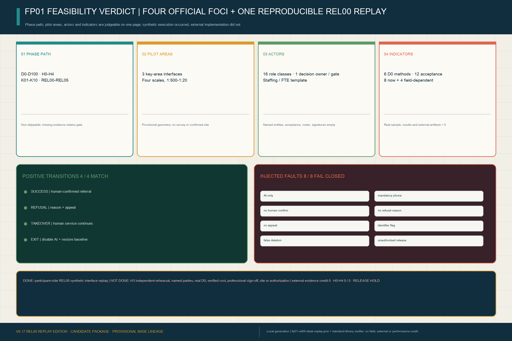
REL00 design-time execution evidence is not H3 independent rehearsal. Named parties, real D0, verified cost, professional sign-off, site and authorization remain empty; H0-H4 is 0 / 5 and external release remains HOLD.
FP01 H0-H4 Evidence Readiness: 5/5 Defined, 0/5 Externally Verified
Five gates are fillable, stoppable and machine-checkable; site, named parties, budget, professional review, controlled rehearsal and authorization still lack external evidence.
0 / 5Verified gates: 0/5. Verified external artifacts: 0. This is register state, not a test-failure rate.Open the bilingual evidence-readiness annex
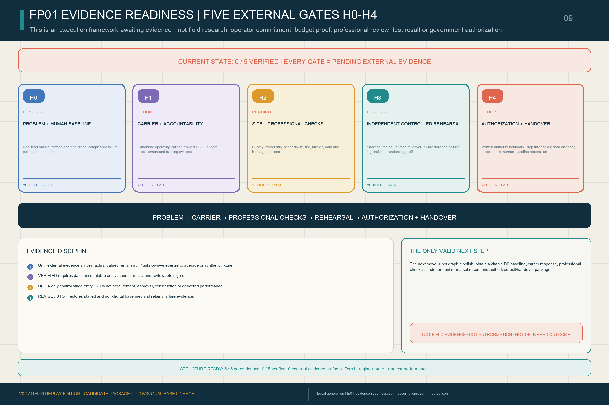
One Master Brand, One Reusable Family of Civic Interfaces
JING-ZHANG BREAKS NEW GROUND is the sole master brand. Five flagships, operating cadence, contribution recognition, three landmarks and six reversible components use one endorsement grammar. AI City API / Trusted Compact is a cross-cutting operating layer, not another brand.
JING-ZHANG BREAKS NEW GROUND1 MASTER · 5 FLAGSHIPS · 4 RITUALS · 5 CONTRIBUTION RECORDS · 3 LANDMARKS · 6 REVERSIBLE COMPONENTSThe mark and components are concept directions—not a final emblem, confirmed facilities or approved construction.
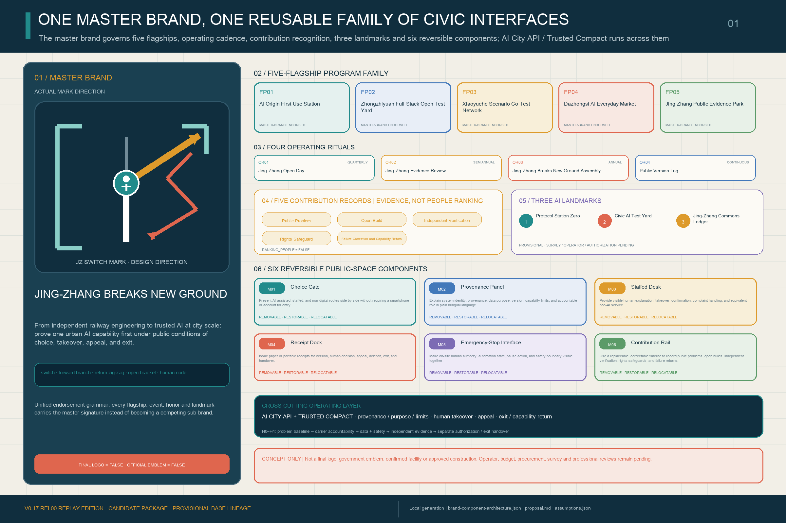
Core Metrics
Known values describe package structure and a provisional design model only. Actual procurement, diffusion, standards output and independently verified public benefit remain unknown.
Task Coverage and Self-Check Status
Sources → assumptions → GeoJSON / metrics → bilingual figures / drawings → matrices → four-gate self-check. Official boundaries trigger whole-package recalculation.
Overview mapThree scopesKey areasLand useMobilityBlue-green public spaceBuildingsRenewal projectsAI scenariosCore metricsTask coverageSelf-check statusSourcesAssumptions
Supporting Analytical Figures
Four figures add key-area, land-use, mobility/blue-green and metric evidence without repeating every core graphic at the end.
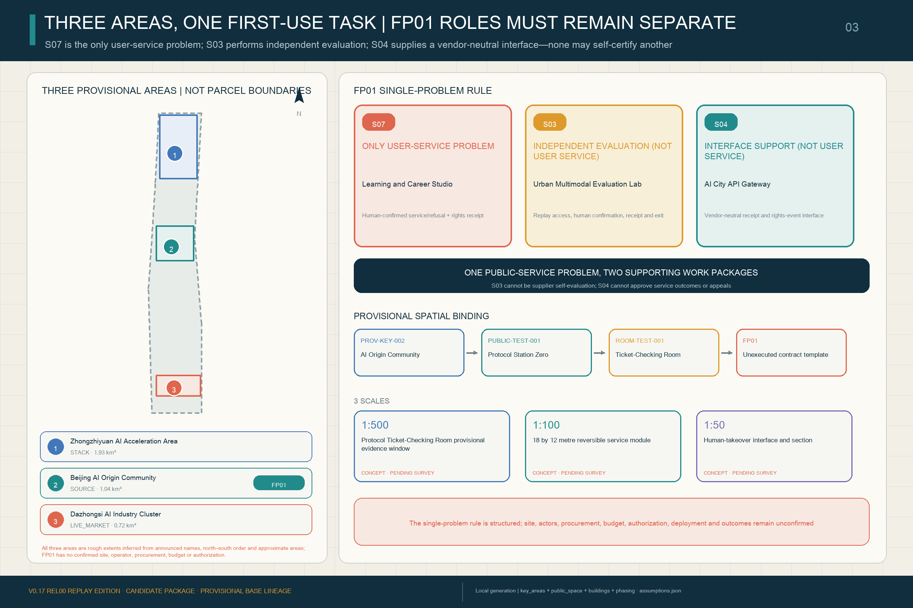
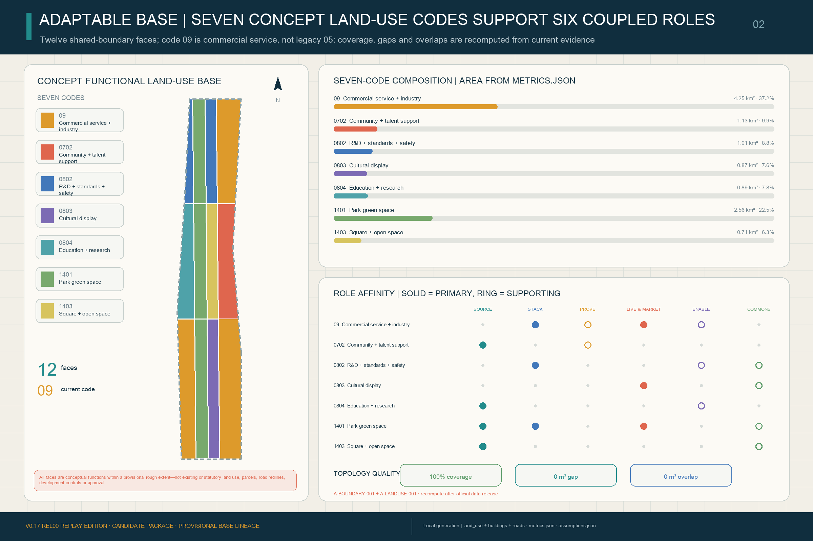
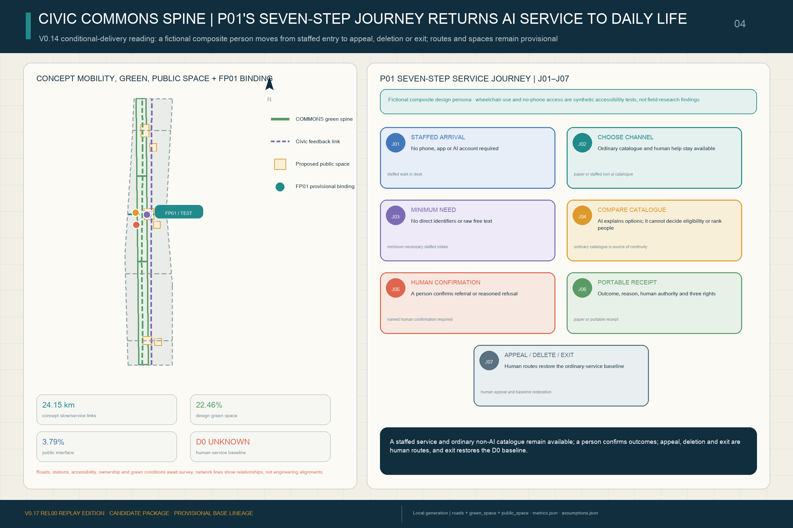
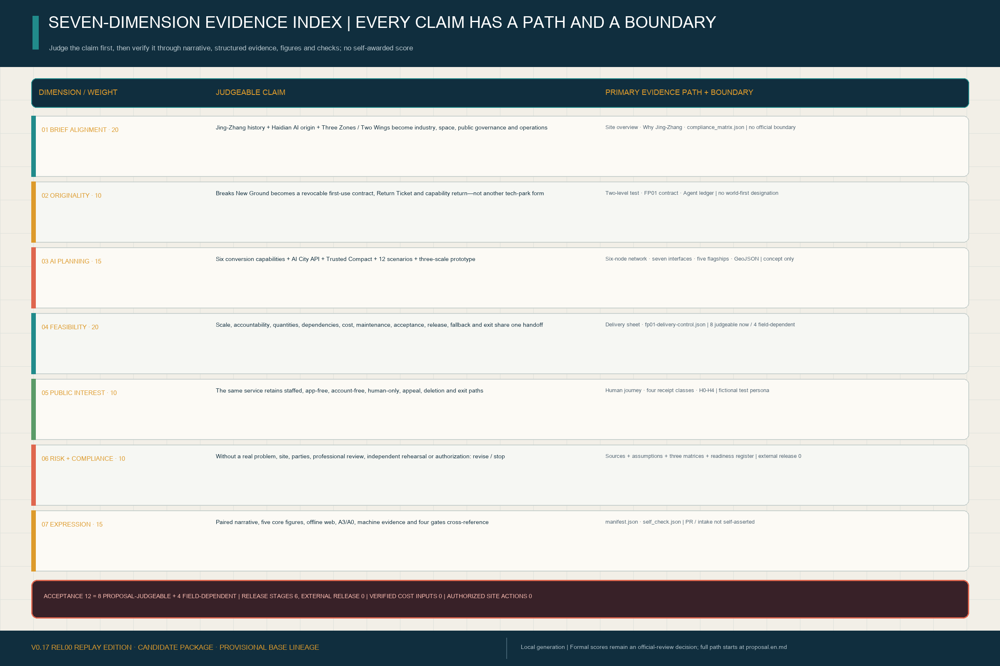